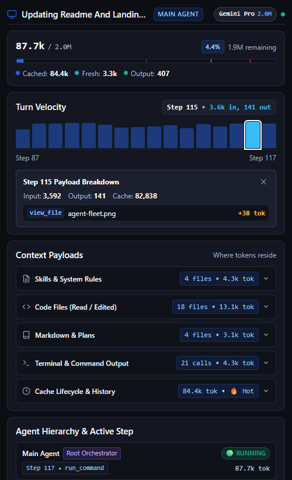

01
Interactive Turn Velocity Graph
Every agent turn is measured in real-time. The 16-step sparkbar graph provides instantaneous visual telemetry of token consumption spikes.
- In-Graph Header Sync: Hovering any sparkbar updates the exact input and output token count directly inside the header without awkward mouse tooltips.
- Step Inspector Drawer: Click any sparkbar to open a deep payload breakdown of that exact turn, revealing which tool calls or file chunks caused the spike.
- Proportional Severity Anchors: Bars highlight elevated (amber) or critical (red) thresholds to warn you of runaway loops.
